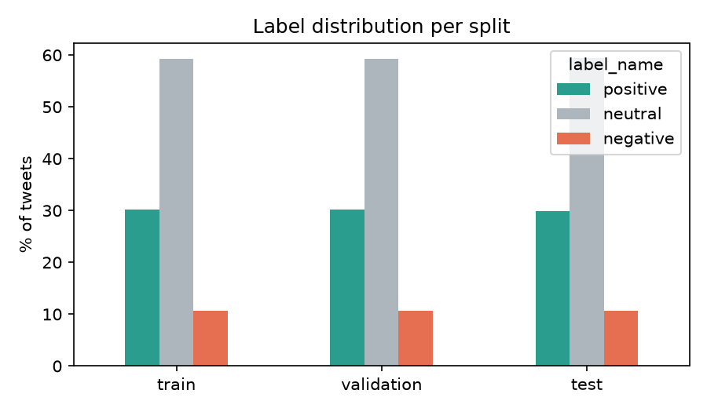
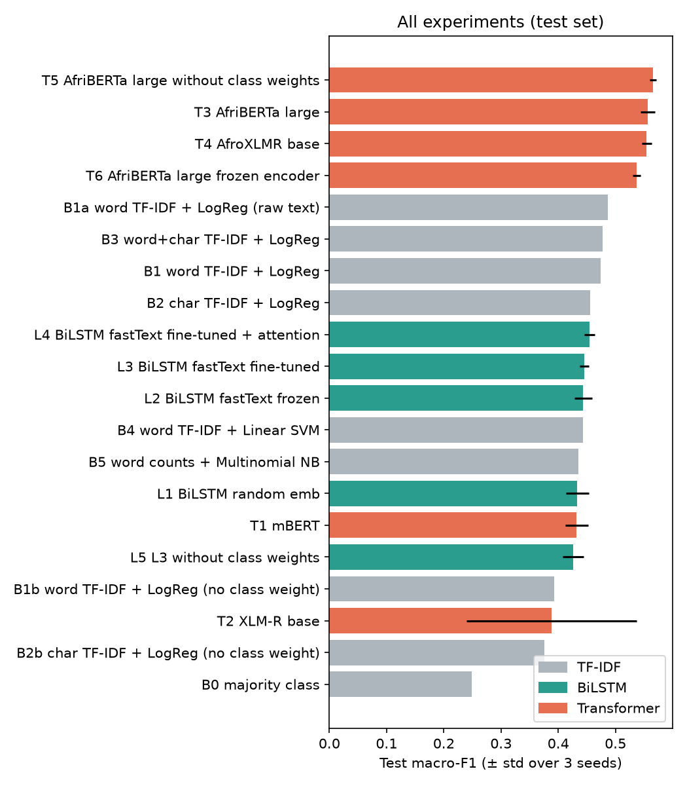
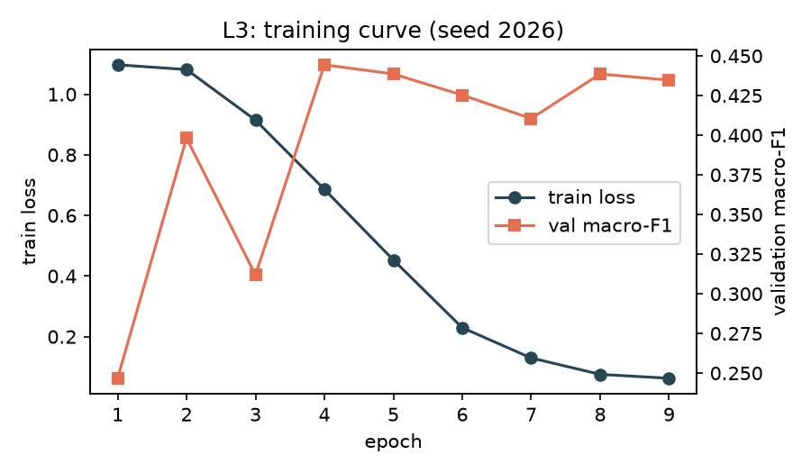
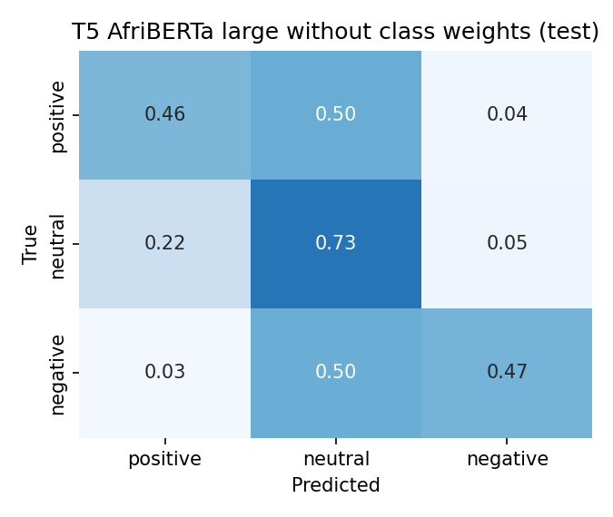
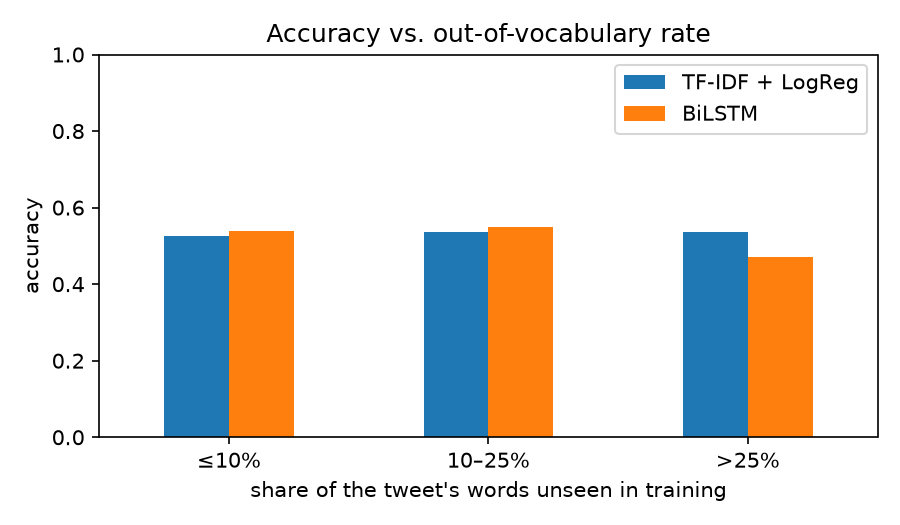

Teta Joella · NLP Summative Project: Text Classification for an African Language · October 2026
| GitHub Repository | https://github.com/Joellate/kiswahili-sentiment-analysis |
| Live System | https://kiswahili-sentiment.streamlit.app/ |
| Demo Video | [link to be added] |
| Fine-tuned Model | https://huggingface.co/RubaxTyra/kiswahili-sentiment |
Kiswahili is one of the three most widely spoken languages in Africa, yet sentiment analysis tools are overwhelmingly built for English. This project develops and deploys a three-way (positive / neutral / negative) sentiment classifier for Kiswahili tweets, using the Kiswahili subset of the AfriSenti benchmark: 3,011 tweets annotated by native speakers. I compare four model families under a shared evaluation protocol (macro-F1, three random seeds for neural models):
The best TF-IDF model reaches 0.486 macro-F1 and the BiLSTM does not improve on it (0.455). Africa-centric Transformers clearly do: AfriBERTa-large reaches 0.566 ± 0.005 and raises F1 on the rare negative class from about 0.31 to 0.53. A paired bootstrap confirms that the gain is significant (+0.112, 95% CI [+0.065, +0.161]). The general multilingual models mBERT and XLM-R perform no better than the TF-IDF baseline. AfroXLMR and XLM-R share an architecture and a tokenizer and differ only in additional African-language pretraining, so their 0.17-point difference isolates the value of that pretraining. Manual analysis of 50 errors shows that about a third involve debatable gold labels, and that most genuine errors lie on the boundary between neutral and opinionated text. The final model is deployed as a Streamlit web application.
Social media is now a primary channel through which people in East Africa discuss politics, public services, sport and commercial products. Much of this discussion happens in Kiswahili, a language spoken across Kenya, Tanzania, Uganda and neighbouring countries and listed among the three African languages with the most speakers (Muhammad et al., 2023a). Organisations that want to monitor public opinion at scale need tools to distinguish complaints from praise and from neutral information. Such organisations include telecom and banking customer-care teams, health ministries running campaigns, and NGOs. Most off-the-shelf sentiment tools are trained on English and do not transfer to Kiswahili. African languages more generally remain severely under-resourced in NLP (Joshi et al., 2020; Nekoto et al., 2020).
Kiswahili tweets are also a demanding test case for text classification:
Objective. I set out to build a Kiswahili tweet sentiment classifier that real users can try through a web interface, and to understand why different modelling approaches succeed or fail in this low-resource setting. The project addresses four questions:
Sentiment analysis for African languages. Early sentiment work relied on lexicons and hand-built features and later moved to neural and pretrained models. African languages joined this progression only recently. NaijaSenti released human-annotated Twitter sentiment corpora for Hausa, Igbo, Nigerian Pidgin and Yorùbá (Muhammad et al., 2022). AfriSenti then extended this to more than 110,000 tweets in 14 African languages, including Kiswahili, each annotated by three native speakers (Muhammad et al., 2023a). AfriSenti formed the basis of SemEval-2023 Task 12 (Muhammad et al., 2023b). On Kiswahili, the AfriSenti baselines report accuracies between 57.8% (XLM-R base) and 63.4% (AfroXLMR-large), averaged over five runs, with AfriBERTa-large at 61.5% (Muhammad et al., 2023a, Table 7). That table reports accuracy only. Because the classes are imbalanced, I use macro-F1 as my primary metric and report accuracy alongside it for comparison.
Pretrained language models for African languages. Massively multilingual encoders such as mBERT (Devlin et al., 2019) and XLM-R (Conneau et al., 2020) include Kiswahili, but it makes up a small fraction of their training data. Several Africa-centric models address this:
Rust et al. (2021) showed that a model's tokenizer quality for a language, measured by fertility (subword tokens per word), partly explains its downstream performance in that language. I measure fertility to test this explanation.
Recurrent models and word embeddings. Before Transformers, the standard neural text classifier was a bidirectional LSTM (Hochreiter & Schmidhuber, 1997; Graves & Schmidhuber, 2005) over pretrained word embeddings, sometimes with attention pooling (Bahdanau et al., 2015). fastText provides subword-aware vectors for 157 languages, including Kiswahili (Bojanowski et al., 2017; Grave et al., 2018).
Existing Kiswahili sentiment systems. To check whether this task is already served, I searched the Hugging Face Hub in October 2026. The search returned eight community-uploaded models for Kiswahili sentiment, each with fewer than 20 downloads in the previous month. None of them comes with a comparison of model families or a public analysis of errors. Research systems from the SemEval shared task focused on leaderboard scores, not on deployable tools.
The gap this work addresses. I found no single study that, on the same Kiswahili data and under one protocol, did all of the following:
I used the Kiswahili (swa) subset of AfriSenti (Muhammad et al., 2023a). It is licensed CC BY 4.0, and I downloaded it from the authors' Hugging Face mirror (shmuhammad/AfriSenti-twitter-sentiment). The data was collected before December 2022 with the Twitter API, using location-based and vocabulary-based filtering. Each tweet was labelled by three native speakers following the Simple Sentiment Questionnaire guidelines, and the final label was decided by majority vote. Tweets on which all three annotators disagreed were discarded. The tweets are real, naturally occurring text, and no synthetic data was used anywhere in this project. I kept the official train / validation / test splits so that results are comparable with the benchmark. The mirror contains one tweet fewer per split than the counts in the paper (1,811 / 454 / 749), most likely due to a header or formatting artefact.
| Split | Positive | Neutral | Negative | Total |
|---|---|---|---|---|
| Train | 547 (30.2%) | 1,072 (59.2%) | 191 (10.6%) | 1,810 |
| Validation | 137 | 268 | 48 | 453 |
| Test | 224 | 444 | 80 | 748 |
Table 1. AfriSenti-Kiswahili split sizes and label distribution. All three splits have the same proportions.
The exploratory analysis is in notebook 01. Six properties shaped the modelling decisions:
@user and removed URLs (Muhammad et al., 2023a). The Hugging Face mirror goes further: no tweet contains an emoji, punctuation mark, @mention or hashtag. Emojis and exclamation marks are among the strongest sentiment cues on Twitter, so the model must rely on words alone.>> became gtgt in 53 tweets), URL fragments, digits (22% of tweets), letter elongation and inconsistent capitalisation.
All cleaning is in src/preprocessing.py. Each step can be switched off so that its effect can be measured:
gt, amp, ...)<num> tokenThe Transformer models receive the same cleaning except for steps 2 and 5. Their pretrained vocabularies are cased and contain numbers, and their subword tokenizers handle both. At inference time the web app additionally strips @mentions, hashtags, emojis and punctuation, so that user input matches the form of the training data.
All models are trained on the training split. Hyperparameters and the best epoch are selected on validation macro-F1, and the test set is used only for reporting. Neural models are trained with three random seeds (13, 42, 2026) and reported as mean ± standard deviation, because with 453 validation and 748 test tweets a single run can vary by several F1 points (Dodge et al., 2020). Every experiment is evaluated by the same function (src/evaluate.py) and logged to results/experiments.csv.
The majority-class predictor gives the floor. The main baseline is TF-IDF + logistic regression, a strong and interpretable standard for small-data text classification (Salton & Buckley, 1988; Pedregosa et al., 2011). I used sublinear term frequency and tuned two settings on validation: the n-gram range ({1}, {1,2}) and the inverse regularisation strength C ∈ {0.3, 1, 3, 10, 30}. Experiments vary:
char_wb, lengths 2–5), which let inflected forms of the same root share featuresEach tweet is mapped to a sequence of word ids (maximum 48), and the model runs as follows:
The model has 3.65M trainable parameters, 3.2M of them in the embedding table. Training uses Adam (Kingma & Ba, 2015) with learning rate 10-3, batch size 32 and gradient clipping at 1.0. The loss is cross-entropy with class weights n/(3·nc), which gives positive 1.10, neutral 0.56 and negative 3.16. Early stopping keeps the epoch with the best validation macro-F1, with patience 5 and at most 30 epochs.
The embeddings are initialised in one of two ways:
cc.sw.300; Grave et al., 2018). Here the vocabulary also includes validation and test words that have a fastText vector. This uses no labels.Pretrained embeddings are either frozen or fine-tuned. Using the fastText vocabulary reduces test <unk> tokens from 20.5% to 9.1%.
Each tweet is split into subword tokens, and a special start token (<s>/[CLS]) is added. The encoder produces a contextual vector per token, and the vector of the first token is passed through a classification head (dense → tanh → linear) to produce three logits. The whole network is fine-tuned end-to-end with the Hugging Face Trainer (Wolf et al., 2020) using AdamW (Loshchilov & Hutter, 2019). Settings were identical across models, so that differences reflect pretraining:
compute_lossThe four encoders cover two strategies:
Two ablations were then run on the best encoder:
I report the following metrics:
To test whether differences between models are real, I use a paired bootstrap over the test set (Koehn, 2004; Dror et al., 2018). The 748 test tweets are resampled 2,000 times, and every model's macro-F1 is recomputed on each resample.
| ID | Model / configuration | Val macro-F1 | Test macro-F1 | Test acc. | F1 neg. |
|---|---|---|---|---|---|
| Baselines | |||||
| B0 | Majority class | 0.248 | 0.248 | 0.594 | 0.000 |
| B1 | Word 1–2-gram TF-IDF + LogReg (C = 10, balanced) | 0.438 | 0.474 | 0.588 | 0.296 |
| B1a | B1 on raw (uncleaned) text | 0.433 | 0.486 | 0.592 | 0.325 |
| B1b | B1 without class weighting | 0.355 | 0.393 | 0.590 | 0.092 |
| B2 | Char 2–5-gram TF-IDF + LogReg (C = 1, balanced) | 0.491 | 0.456 | 0.535 | 0.304 |
| B3 | Word + char TF-IDF + LogReg | 0.449 | 0.478 | 0.575 | 0.310 |
| B4 | Word TF-IDF + linear SVM | 0.411 | 0.443 | 0.583 | 0.248 |
| B5 | Word counts + multinomial Naive Bayes | 0.416 | 0.435 | 0.600 | 0.150 |
| BiLSTM (mean ± std over 3 seeds) | |||||
| L1 | Random embeddings, max pooling | 0.412 | 0.433 ± 0.020 | 0.522 | 0.242 |
| L2 | fastText, frozen | 0.417 | 0.444 ± 0.016 | 0.524 | 0.300 |
| L3 | fastText, fine-tuned | 0.444 | 0.446 ± 0.008 | 0.545 | 0.277 |
| L4 | fastText, fine-tuned, attention pooling | 0.435 | 0.455 ± 0.010 | 0.537 | 0.308 |
| L5 | L3 without class weighting | 0.436 | 0.426 ± 0.018 | 0.537 | 0.220 |
| Fine-tuned Transformers (mean ± std over 3 seeds) | |||||
| T1 | mBERT | 0.431 | 0.432 ± 0.020 | 0.512 | 0.264 |
| T2 | XLM-R base | 0.371 | 0.388 ± 0.149 | 0.448 | 0.292 |
| T3 | AfriBERTa-large | 0.528 | 0.556 ± 0.013 | 0.582 | 0.521 |
| T4 | AfroXLMR base | 0.527 | 0.554 ± 0.009 | 0.581 | 0.525 |
| T5 | AfriBERTa-large without class weighting | 0.538 | 0.566 ± 0.005 | 0.606 | 0.526 |
| T6 | AfriBERTa-large, frozen encoder | 0.525 | 0.537 ± 0.007 | 0.557 | 0.505 |
Table 2. All experiments. For neural models, accuracy and F1 negative are means over seeds. Full per-class results are in results/experiments.csv.

The best linear models reach 0.47–0.49 test macro-F1, about twice the majority-class floor. Accuracy alone is misleading here: the majority baseline (0.594) is more accurate than several real models. Class weighting is the single largest effect. Without it, negative-class F1 collapses to 0.05–0.09 because the classifier almost never predicts the rare class (B1b, B2b), and macro-F1 drops by about 0.08. Cleaning made no measurable difference (B1 vs B1a), which is plausible since the release had already removed emojis, punctuation and mentions. Character n-grams were best on validation (0.491) but not on test (0.456). Differences of a few points are within the noise of a 453-tweet validation set (48 negative examples). This was the first sign that single-run comparisons are unreliable here, and it motivated the use of multiple seeds for the neural models.
No BiLSTM configuration beats the TF-IDF baseline. The learning curve (Figure 3) shows why: training loss falls to about 0.06 while validation macro-F1 peaks at epoch 4, which is classic overfitting. Early stopping limits the damage but cannot create information. With 3.65M parameters and 1,810 short tweets, the network memorises the training set. A linear model over sparse features has a much stronger bias suited to small data.
In these tweets, sentiment is also carried largely by individual words such as amefariki ("has died") and asante ("thank you"), not by word order, which is the BiLSTM's advantage.
fastText initialisation helps modestly. It adds +0.01 macro-F1 (L1 → L3) and halves the variance across seeds (0.020 → 0.008). It cannot do more because only 66% of training word types have a fastText vector: Common Crawl Kiswahili is formal web text, while tweets contain slang and merged words. Freezing or fine-tuning the embeddings makes no difference (0.444 vs 0.446). Attention pooling is the best BiLSTM on test (0.455) but not on validation, again within noise. Inspecting its weights shows attention concentrated on topic and function words (watu "people", mwaka "year", numbers) rather than on sentiment words. This is consistent with the finding that attention weights are not faithful explanations (Jain & Wallace, 2019).

The two Africa-centric encoders reach about 0.555 macro-F1, roughly 0.07 above the best TF-IDF model and 0.10 above the BiLSTM. They also raise negative-class F1 from about 0.31 to 0.52, so the improvement is concentrated on the hardest class. The two general multilingual models, by contrast, score below the TF-IDF baseline.
The cleanest comparison is XLM-R vs AfroXLMR. The two have the same architecture, size and tokenizer, and AfroXLMR is XLM-R with additional pretraining on African-language text (Alabi et al., 2022). That additional pretraining alone is worth +0.17 macro-F1 here.
XLM-R's large standard deviation (0.149) shows that at least one of its three runs failed to train properly. This instability of fine-tuning on small datasets is well documented (Mosbach et al., 2021; Dodge et al., 2020), and it is why seed averaging was necessary.
| Tokenizer | Vocabulary | Fertility | Tokenization of wamefariki ajalini ("they died in an accident") |
|---|---|---|---|
| mBERT | 119,547 | 2.12 | wa ##me ##fari ##ki ajal ##ini |
| XLM-R / AfroXLMR | 250,002 | 1.61 | ▁wame fariki ▁ajal ini |
| AfriBERTa | 70,006 | 1.45 | ▁wamefariki ▁ajali ni |
Table 3. Tokenizer fertility (subword tokens per word) on all 1,810 training tweets. ▁ marks the start of a word and ## marks a word continuation.
Tokenization tells part of the story (Table 3). AfriBERTa, with a vocabulary built for African languages, splits Kiswahili least and keeps wamefariki as a single token, while mBERT fragments it into four pieces. But XLM-R and AfroXLMR have identical fertility and very different scores. Tokenization alone therefore cannot explain the gap; what the encoder learned during pretraining matters more (cf. Rust et al., 2021). AfriBERTa matches AfroXLMR with less than half the parameters, consistent with Ogueji et al. (2021).
For comparison with published work, my AfriBERTa-large runs reach 58.2% (T3) and 60.6% (T5) accuracy. The AfriSenti paper reports 61.5% for the same model on the same task (Muhammad et al., 2023a, Table 7). Their setup differs in learning rate, batch size and number of epochs, and their version of the text keeps emojis and punctuation.
Ablations. Without class weighting, AfriBERTa performs as well or slightly better (T5: 0.566 ± 0.005 vs T3: 0.556 ± 0.013), with identical negative-class F1. Unlike for TF-IDF, where removing weights cost 0.08, the pretrained representations already separate the rare class. T5 has the best validation score, so it is the configuration I deployed. With the encoder frozen (T6), AfriBERTa still reaches 0.537 and beats every non-Transformer model. Most of the gain therefore comes from the pretrained representations themselves, with full fine-tuning adding a further 0.02–0.03.
Statistical significance. The deployed model (T5, seed 42; test macro-F1 0.568, accuracy 0.623) was compared with the best TF-IDF model and the best BiLSTM using the paired bootstrap:
| Comparison | Mean Δ macro-F1 | 95% CI | P(Δ ≤ 0) |
|---|---|---|---|
| Transformer − TF-IDF | +0.112 | [+0.065, +0.161] | < 0.001 |
| Transformer − BiLSTM | +0.112 | [+0.065, +0.160] | < 0.001 |
| BiLSTM − TF-IDF | −0.001 | [−0.042, +0.041] | 0.52 |
The Transformer's lead is clearly significant, while the BiLSTM and TF-IDF models are statistically indistinguishable. The TF-IDF comparison uses the B2 model, which was selected on validation.

The model rarely confuses positive with negative. Only 3.5% of its 282 test errors are positive ↔ negative flips (Figure 4). The other 96.5% involve the neutral class:
The model usually gets the direction of sentiment right. What it struggles with is whether a tweet expresses sentiment at all. Half of all negative tweets are predicted neutral, which explains the remaining weakness on that class.
Pretraining removes the vocabulary problem. Grouping test tweets by the share of their words unseen in training (Figure 5), the BiLSTM's accuracy drops from 0.55 to 0.47 when more than 25% of words are OOV. The Transformer stays flat (0.63 / 0.61 / 0.63). This directly confirms the hypothesis from the data analysis: the BiLSTM's bottleneck was lexical coverage, and subword pretraining supplies it.
Other patterns. Longer tweets are harder for every model (Transformer: 0.69 accuracy for ≤ 10 words vs 0.60–0.61 for longer ones). 166 test tweets (22%) are misclassified by all three model families.

I drew a random sample of 50 test errors of the deployed model, read each one, and assigned it to one category (results/error_sample.csv gives a gloss and reason for every tweet).
| Category | n | Example (gold → predicted) |
|---|---|---|
| Debatable or wrong gold label | 17 | "Leo Oktoba 3 ndio siku ya uteuzi wa Waandikishaji wa Wapiga kura" ("today is the day voter registrars are appointed"), positive → neutral; customer-care templates and adverts labelled positive in some tweets and neutral in others |
| Clear model error | 11 | "Nzuri Sana" ("very good"), positive → neutral; "...ufundishaji mbovu mazingira duni..." ("poor teaching, poor environment"), negative → neutral; a weather forecast, neutral → positive |
| News vs opinion | 9 | "Klabu ya Simba imetozwa faini ya milioni tatu..." ("Simba club has been fined three million"), negative → neutral; "Museveni aliwahi kushikiliwa katika Gereza la Ukonga..." ("Museveni was once held in Ukonga prison"), neutral → negative |
| Missing context | 5 | "Machungu boss Wangu" ("bitterness, my boss"), a reply without its thread; "Naomba tutumie hashtags hizi" ("let's use these hashtags"), whose hashtags were stripped |
| Slang / spelling | 4 | Sheng and run-together words with 50% OOV |
| Mixed sentiment | 2 | "Huwa inauma aisee... But lengo ni ufurahi" ("it hurts... but the goal is to be happy") |
| Code-switching | 2 | "What a joy Nahodha wa Taifa Stars...": the sentiment is in the English words |
Table 4. Manual categorisation of 50 randomly sampled errors of the deployed model.
The data limits the achievable score. About a third of the sampled errors involve gold labels that are debatable or wrong. Most are formulaic customer-care replies, adverts, and informational tweets labelled positive. This matches the conflicting duplicate labels found during data exploration and Prabhakaran et al.'s observation, cited by Muhammad et al. (2023a), that majority voting conceals systematic annotator disagreement. The true quality of the model is therefore somewhat better than 0.568 macro-F1 suggests. The absence of a published agreement score for Kiswahili makes the ceiling hard to quantify.
The hardest boundary is conceptual. Many genuine errors are tweets that report an event with emotional content (a fine, a death, a prison term, an electricity connection) without the author expressing an opinion. Annotators sometimes labelled these by the event's valence and sometimes as neutral. The model has learned topic words such as gereza ("prison") and amefariki ("has died") as sentiment cues, which helps on some tweets and hurts on others. The live demo exposed a related, practical weakness: clear complaints such as "Huduma yenu ni mbaya sana..." ("your service is very bad") are predicted neutral. A plausible reason is that customer-service tweets in the training data are mostly polite company replies, so direct customer complaints are under-represented.
What pretraining did and did not solve. Slang, spelling variation and code-switching account for only 6 of the 50 errors once an Africa-centric Transformer is used. Together with the flat accuracy across OOV levels, this suggests that the vocabulary problem which limited the TF-IDF and BiLSTM models is largely solved by pretraining. The remaining errors are mostly about meaning and annotation, which more model capacity alone is unlikely to fix.
The deployed model is published on the Hugging Face Hub (RubaxTyra/kiswahili-sentiment) together with a model card and the experiment results. The web application (app/streamlit_app.py) is built with Streamlit and hosted free on Streamlit Community Cloud at kiswahili-sentiment.streamlit.app. Each request goes through five steps:
app/predict.py).The model is downloaded from the Hub on first start and cached in memory (st.cache_resource). A Gradio version of the same interface (app/app.py) shares the prediction code and can be run locally.
The original plan was to host the Gradio app on Hugging Face Spaces. The deployment step returned HTTP 402 (Payment Required): Gradio Spaces now require a paid subscription, so I moved the interface to Streamlit Community Cloud and kept the model on the Hub. Free Streamlit apps sleep after a period of inactivity, so the first visit may take about a minute to wake the app.
Future work. With more time and resources I would:
For Kiswahili tweet sentiment with under 2,000 labelled examples, the decisive factor was not the architecture but what the model already knew about the language:
Error analysis showed that the remaining errors concern the boundary between neutral reporting and expressed opinion, together with a sizeable share of questionable gold labels. Progress on this task is therefore likely to come as much from better data and clearer annotation as from better models.
Three methodological lessons came out of the project. First, macro-F1 and seed averaging were necessary to avoid drawing conclusions from noise. Second, a more complex model must earn its place against a strong simple baseline. Third, reading the errors in the original language revealed problems with the data that the scores alone did not show.
Adebara, I., Elmadany, A., Abdul-Mageed, M., & Alcoba Inciarte, A. (2023). SERENGETI: Massively multilingual language models for Africa. In Findings of the Association for Computational Linguistics: ACL 2023 (pp. 1498–1537). https://aclanthology.org/2023.findings-acl.97
Alabi, J. O., Adelani, D. I., Mosbach, M., & Klakow, D. (2022). Adapting pre-trained language models to African languages via multilingual adaptive fine-tuning. In Proceedings of COLING 2022 (pp. 4336–4349). https://aclanthology.org/2022.coling-1.382
Bahdanau, D., Cho, K., & Bengio, Y. (2015). Neural machine translation by jointly learning to align and translate. In International Conference on Learning Representations (ICLR).
Bojanowski, P., Grave, E., Joulin, A., & Mikolov, T. (2017). Enriching word vectors with subword information. Transactions of the Association for Computational Linguistics, 5, 135–146.
Conneau, A., Khandelwal, K., Goyal, N., Chaudhary, V., Wenzek, G., Guzmán, F., Grave, E., Ott, M., Zettlemoyer, L., & Stoyanov, V. (2020). Unsupervised cross-lingual representation learning at scale. In Proceedings of ACL 2020 (pp. 8440–8451). https://aclanthology.org/2020.acl-main.747
Devlin, J., Chang, M.-W., Lee, K., & Toutanova, K. (2019). BERT: Pre-training of deep bidirectional transformers for language understanding. In Proceedings of NAACL-HLT 2019 (pp. 4171–4186). https://aclanthology.org/N19-1423
Dodge, J., Ilharco, G., Schwartz, R., Farhadi, A., Hajishirzi, H., & Smith, N. (2020). Fine-tuning pretrained language models: Weight initializations, data orders, and early stopping. arXiv:2002.06305.
Dror, R., Baumer, G., Shlomov, S., & Reichart, R. (2018). The hitchhiker's guide to testing statistical significance in natural language processing. In Proceedings of ACL 2018 (pp. 1383–1392). https://aclanthology.org/P18-1128
Grave, E., Bojanowski, P., Gupta, P., Joulin, A., & Mikolov, T. (2018). Learning word vectors for 157 languages. In Proceedings of LREC 2018.
Graves, A., & Schmidhuber, J. (2005). Framewise phoneme classification with bidirectional LSTM and other neural network architectures. Neural Networks, 18(5–6), 602–610.
Hochreiter, S., & Schmidhuber, J. (1997). Long short-term memory. Neural Computation, 9(8), 1735–1780.
Jain, S., & Wallace, B. C. (2019). Attention is not explanation. In Proceedings of NAACL-HLT 2019 (pp. 3543–3556). https://aclanthology.org/N19-1357
Joshi, P., Santy, S., Budhiraja, A., Bali, K., & Choudhury, M. (2020). The state and fate of linguistic diversity and inclusion in the NLP world. In Proceedings of ACL 2020 (pp. 6282–6293). https://aclanthology.org/2020.acl-main.560
Kingma, D. P., & Ba, J. (2015). Adam: A method for stochastic optimization. In International Conference on Learning Representations (ICLR).
Koehn, P. (2004). Statistical significance tests for machine translation evaluation. In Proceedings of EMNLP 2004 (pp. 388–395). https://aclanthology.org/W04-3250
Loshchilov, I., & Hutter, F. (2019). Decoupled weight decay regularization. In International Conference on Learning Representations (ICLR).
Martin, G. L., Mswahili, M. E., & Jeong, Y.-S. (2022). SwahBERT: Language model of Swahili. In Proceedings of NAACL-HLT 2022 (pp. 303–313). https://aclanthology.org/2022.naacl-main.23
Mosbach, M., Andriushchenko, M., & Klakow, D. (2021). On the stability of fine-tuning BERT: Misconceptions, explanations, and strong baselines. In International Conference on Learning Representations (ICLR).
Muhammad, S. H., Adelani, D. I., Ruder, S., Ahmad, I. S., Abdulmumin, I., Bello, B. S., et al. (2022). NaijaSenti: A Nigerian Twitter sentiment corpus for multilingual sentiment analysis. In Proceedings of LREC 2022 (pp. 590–602). https://aclanthology.org/2022.lrec-1.63
Muhammad, S. H., Abdulmumin, I., Ayele, A. A., Ousidhoum, N., Adelani, D. I., Yimam, S. M., et al. (2023a). AfriSenti: A Twitter sentiment analysis benchmark for African languages. In Proceedings of EMNLP 2023 (pp. 13968–13981). https://aclanthology.org/2023.emnlp-main.862. Dataset: https://huggingface.co/datasets/shmuhammad/AfriSenti-twitter-sentiment (CC BY 4.0).
Muhammad, S. H., Abdulmumin, I., Yimam, S. M., Adelani, D. I., Ahmad, I. S., Ousidhoum, N., et al. (2023b). SemEval-2023 Task 12: Sentiment analysis for African languages (AfriSenti-SemEval). In Proceedings of SemEval-2023 (pp. 2319–2337). https://aclanthology.org/2023.semeval-1.315
Nekoto, W., Marivate, V., Matsila, T., Fasubaa, T., Kolawole, T., Fagbohungbe, T., et al. (2020). Participatory research for low-resourced machine translation: A case study in African languages. In Findings of the Association for Computational Linguistics: EMNLP 2020 (pp. 2144–2160). https://aclanthology.org/2020.findings-emnlp.195
Ogueji, K., Zhu, Y., & Lin, J. (2021). Small data? No problem! Exploring the viability of pretrained multilingual language models for low-resourced languages. In Proceedings of the 1st Workshop on Multilingual Representation Learning (pp. 116–126). https://aclanthology.org/2021.mrl-1.11
Paszke, A., Gross, S., Massa, F., Lerer, A., Bradbury, J., Chanan, G., et al. (2019). PyTorch: An imperative style, high-performance deep learning library. In Advances in Neural Information Processing Systems 32.
Pedregosa, F., Varoquaux, G., Gramfort, A., Michel, V., Thirion, B., Grisel, O., et al. (2011). Scikit-learn: Machine learning in Python. Journal of Machine Learning Research, 12, 2825–2830.
Rust, P., Pfeiffer, J., Vulić, I., Ruder, S., & Gurevych, I. (2021). How good is your tokenizer? On the monolingual performance of multilingual language models. In Proceedings of ACL-IJCNLP 2021 (pp. 3118–3135). https://aclanthology.org/2021.acl-long.243
Salton, G., & Buckley, C. (1988). Term-weighting approaches in automatic text retrieval. Information Processing & Management, 24(5), 513–523.
Streamlit Inc. (2026). Streamlit Community Cloud [Software platform]. https://streamlit.io/cloud
Wolf, T., Debut, L., Sanh, V., Chaumond, J., Delangue, C., Moi, A., et al. (2020). Transformers: State-of-the-art natural language processing. In Proceedings of EMNLP 2020: System Demonstrations (pp. 38–45). https://aclanthology.org/2020.emnlp-demos.6
Models used: castorini/afriberta_large, Davlan/afro-xlmr-base, FacebookAI/xlm-roberta-base, google-bert/bert-base-multilingual-cased (Hugging Face Hub); fastText cc.sw.300 vectors (https://fasttext.cc/docs/en/crawl-vectors.html).